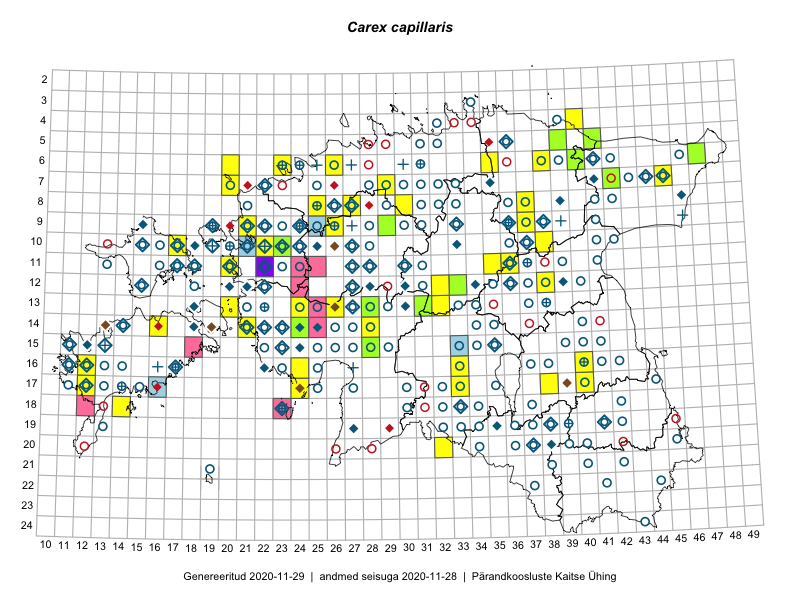

Carex capillaris
Uuendatud: 2016-12-07
Kaardile koondatud taksonid: Carex capillaris L.

Kaart põhineb 47 kirjel, neist vaatlusi 46 ja eksemplare 1. Taksonit on leitud 34 ruudust.
| Ruut | Vaatleja(d) | Vaatlusaeg | Kirje tüüp | Viide andmebaasikirjele |
|---|---|---|---|---|
| 16-40 | Thea Kull | 2015-07-07 | ruut/ala | vaata PlutoFis |
| 10-17 | Toomas Kukk, Eerik Leibak | 2015-08-12 | ruut/ala | vaata PlutoFis |
| 11-35 | Ott Luuk, Peedu Saar | 2015-07-27 | ruut/ala | vaata PlutoFis |
| 18-14 | Toomas Kukk | 2014-06-18 | ruut/ala | vaata PlutoFis |
| 07-45 | Ott Luuk, Hannes Pehlak | 2015-07-22 | ruut/ala | vaata PlutoFis |
| 14-16 | Ott Luuk, Elle Roosaluste, Jaak-Albert Metsoja | 2015-06-15 | ruut/ala | vaata PlutoFis |
| 17-40 | Thea Kull, Peedu Saar | 2015-06-19 | ruut/ala | vaata PlutoFis |
| 14-16 | Toomas Kukk, Thea Kull, Ott Luuk, Peedu Saar | 2014-06-27 | ruut/ala | vaata PlutoFis |
| 13-20 | Meeli Mesipuu | 2015-07-13 | ruut/ala | vaata PlutoFis |
| 13-20 | Meeli Mesipuu | 2015-07-13 | punkt | vaata PlutoFis |
| 05-41 | Meeli Mesipuu, Timo Luhamäe | 2015-07-24 | ruut/ala | vaata PlutoFis |
| 16-33 | Maria Abakumova | 2015-06-21 | ruut/ala | vaata PlutoFis |
| 11-36 | Ülle Jõgar, Illi Tarmu, Kai Rünk | 2015-07-24 | ruut/ala | vaata PlutoFis |
| 17-24 | Maret Gerz, Leena Gerz | 2015-08-12 | ruut/ala | vaata PlutoFis |
| 17-33 | Maria Abakumova | 2015-06-29 | ruut/ala | vaata PlutoFis |
| 16-12 | Mari Reitalu | 2015-07-27 | ruut/ala | vaata PlutoFis |
| 13-31 | Timo Luhamäe, Meeli Mesipuu | 2015-06-08 | punkt | vaata PlutoFis |
| 12-33 | Timo Luhamäe, Meeli Mesipuu | 2015-06-11 | punkt | vaata PlutoFis |
| 12-33 | Meeli Mesipuu, Timo Luhamäe | 2015-06-11 | ruut/ala | vaata PlutoFis |
| 13-31 | Meeli Mesipuu, Timo Luhamäe | 2015-06-08 | ruut/ala | vaata PlutoFis |
| 10-38 | Karin Kikas, Elle Rajandu | 2015-06-02 | ruut/ala | vaata PlutoFis |
| 06-40 | Mari Metsoja, Jaak-Albert Metsoja | 2015-07-24 | ruut/ala | vaata PlutoFis |
| 07-42 | Mari Metsoja, Jaak-Albert Metsoja | 2015-07-23 | ruut/ala | vaata PlutoFis |
| 05-41 | Timo Luhamäe, Meeli Mesipuu | 2015-07-24 | punkt | vaata PlutoFis |
| 16-40 | Maret Gerz, Ott Luuk | 2014-06-25 | ruut/ala | vaata PlutoFis |
| 13-24 | Marek Sammul, Ott Luuk | 2014-06-21 | ruut/ala | vaata PlutoFis |
| 09-21 | Kadi-Liis Kesler, Tõnu Ploompuu | 2015-07-14 | ruut/ala | vaata PlutoFis |
| 07-29 | Meeli Mesipuu, Thea Kull | 2016-06-02 | punkt | vaata PlutoFis |
| 07-29 | Thea Kull, Meeli Mesipuu | 2016-06-02 | ruut/ala | vaata PlutoFis |
| 13-26 | Thea Kull | 2016-06-22 | ruut/ala | vaata PlutoFis |
| 16-24 | Thea Kull, Helle Mäemets | 2016-07-04 | punkt | vaata PlutoFis |
| 13-32 | Thea Kull, Raivo Kalle, Susanna Vain | 2016-07-21 | ruut/ala | vaata PlutoFis |
| 13-32 | Thea Kull, Raivo Kalle, Susanna Vain | 2016-07-21 | punkt | vaata PlutoFis |
| 11-20 | Aat Sarv, Maret Gerz | 2016-07-07 | ruut/ala | vaata PlutoFis |
| 08-37 | Mari Reitalu, Triin Reitalu | 2016-07-12 | ruut/ala | vaata PlutoFis |
| 09-37 | Mari Reitalu, Triin Reitalu | 2016-07-11 | ruut/ala | vaata PlutoFis |
| 08-37 | Mari Reitalu, Triin Reitalu | 2016-07-17 | punkt | vaata PlutoFis |
| 08-25 | Helle Mäemets, Tiina Elvisto | 2016-07-05 | ruut/ala | vaata PlutoFis |
| 16-24 | Helle Mäemets, Thea Kull | 2016-07-04 | ruut/ala | vaata PlutoFis |
| 04-40 | Tiit Hallikma, Ott Luuk | 2016-07-28 | ruut/ala | vaata PlutoFis |
| 11-36 | Timo Luhamäe, Meeli Mesipuu | 2016-07-25 | punkt | vaata PlutoFis |
| 11-36 | Meeli Mesipuu, Timo Luhamäe | 2016-07-25 | ruut/ala | vaata PlutoFis |
| 14-21 | Toomas Kukk | 2012-06-25 | ruut/ala | vaata PlutoFis |
| 14-21 | Ott Luuk, Peedu Saar | 2016-06-29 | punkt | vaata PlutoFis |
| 06-20 | Jaak-Albert Metsoja, Mari Metsoja | 2016-06-30 | ruut/ala | vaata PlutoFis |
| 20-32 | Jaak-Albert Metsoja, Mari Metsoja, Lena Neuenkamp | 2016-07-18 | ruut/ala | vaata PlutoFis |
| 09-29 | Ott Luuk | 2013-06-11 | eksemplar | vaata PlutoFis |